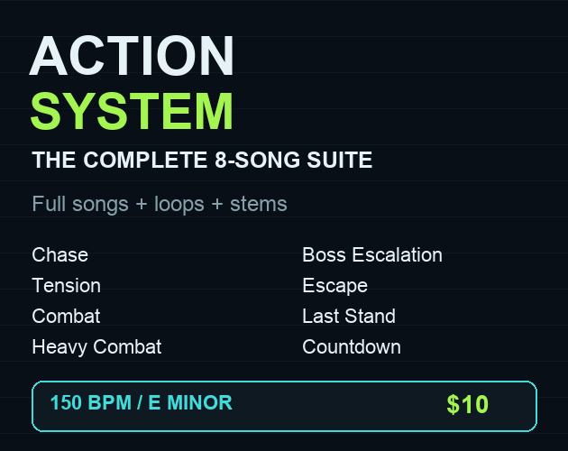
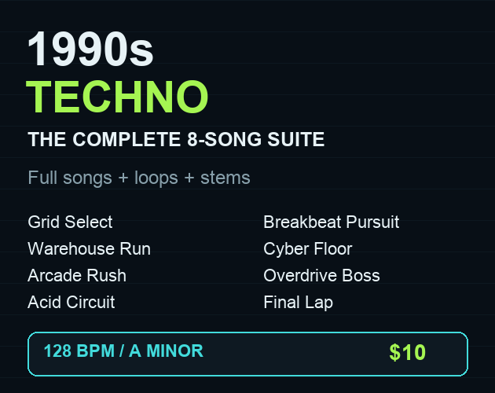
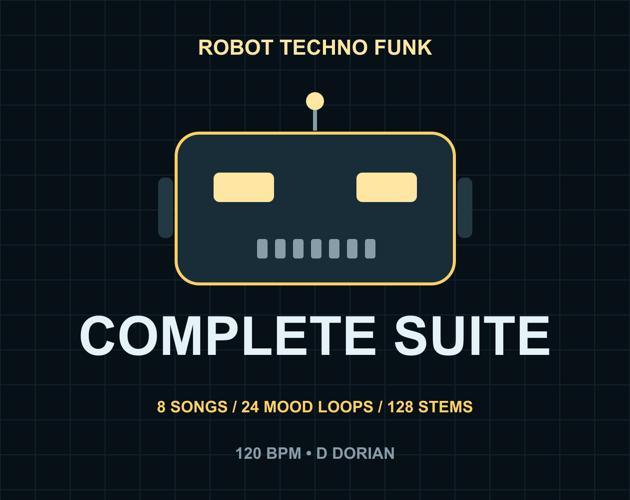
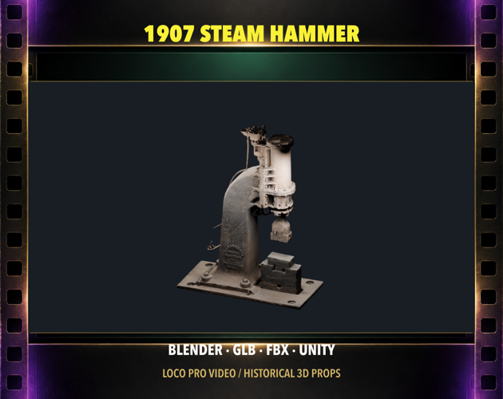

Video production
Hype reels, event trailers, promotional videos and career highlights. We shape footage into stories that carry the energy of the moment.
Watch our video work

The media arm of LoCo Pro Wrestling.
Video production. Audio production.
3D modeling.
Picture. Sound. Dimension.
Hype reels, event trailers, promotional videos and career highlights. We shape footage into stories that carry the energy of the moment.
Watch our video workOriginal music and audio for games and media. Robot Techno Funk brings full songs, compatible mood loops and separate instrument stems to your soundtrack.
Browse game music3D models and props for games and visual projects. We work in three dimensions to bring objects and ideas into the scene.
Browse 3D propsGame music, 3D assets and Notion templates.
47 products on itch.io: 24 songs and 3 complete suites across three game-music collections, plus 20 historical 3D props. Every song comes with its full arrangement, mood loops and stems.

Game music · 150 BPM · E minor
Chase, stealth, combat, boss and escape themes. 8 songs, 24 mood loops and 128 stems.
$2 per song · $10 complete suite

Game music · 128 BPM · A minor
Menus, night drives, score attack, hacking and the final lap. 8 songs, 24 mood loops and 128 stems.
$2 per song · $10 complete suite

Game music · 120 BPM · D Dorian
Electronic funk for factories, dance battles and boss pressure. 8 songs, 24 mood loops and 128 stems.
$2 per song · $10 complete suite

3D props · Blender · GLB · FBX · Unity
20 museum pieces prepared from CC0 scans: a steam hammer, a microscope, a wall telephone, ewers, keys and more.
$2 each · radio $3
Music is original composition made with AI assistance. Royalty-free for games and media; no standalone resale or Content ID.
Full Edition · $19
A linked Notion story bible for characters, factions, locations, timelines and ongoing conflicts in serialized worlds. Five connected databases keep your canon organized, with canon status on every timeline entry so unrevealed backstory stays out of audience-facing material. Built for wrestling promotions, TTRPG campaigns, podcasts and fiction.
LoCo Pro & Primos Pro Wrestling
We couldn’t refresh the portfolio. The existing selection is still available.
 Watch film
Watch film Primos Pro Wrestling
Joey Terrofyin / The Provider career reel. Edit: LoCo Pro Video. Title photograph: CMRice Photography.
 Watch film
Watch film Primos Pro Wrestling
A career highlight reel for Primos Pro Wrestling.
 Watch film
Watch film Primos Pro Wrestling
Event promotion for Primos Premier Pro Wrestling.
 Watch film
Watch film Primos Pro Wrestling
A historical highlight reel spanning Slave 2 through Slave 16.
 Watch film
Watch film Explore the LoCo Pro Video channel while the collection is updated.
Visit YouTube ↗LoCo Pro Video is the media arm of LoCo Pro Wrestling.
We work across video production, audio production and 3D modeling, creating stories, soundtracks and assets for events, games and visual projects.
Our selected video work includes projects for LoCo Pro Wrestling and Primos Pro Wrestling.
Browse music & 3D assets ↗